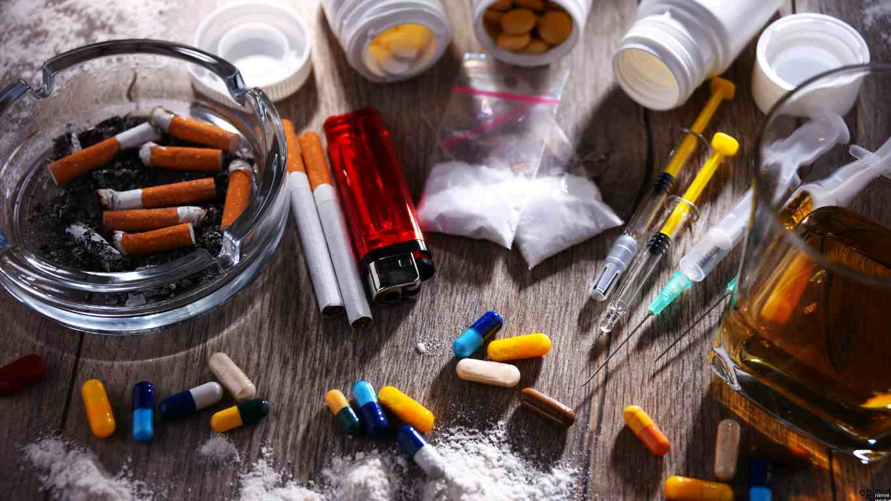

La prevención incluye educación emocional, autoestima, comunicación familiar,
actividades deportivas y evitar el consumo temprano.La prevención de adicciones es nuestra herramienta más
poderosa, enfocada en desarrollar habilidades de vida como la asertividad y el manejo del estrés para
evitar caer en el consumo, que en el caso de sustancias como la Metanfetamina y el Fentanilo, representan
un riesgo de muerte o daño cerebral irreversible. En el ámbito legal de Tijuana, la posesión de drogas
está estrictamente regulada por la Ley General de Salud:
Artículo 475.- Se impondrá prisión de cuatro a ocho años y de doscientos a cuatrocientos días multa,
a quien sin autorización comercie o suministre, aún gratuitamente, narcóticos previstos en la tabla, en
cantidad inferior a la que resulte de multiplicar por mil el monto de las previstas en dicha tabla.
Cuando la víctima fuere persona menor de edad o que no tenga capacidad para comprender la
relevancia de la conducta o para resistir al agente; o que aquélla fuese utilizada para la comisión de los
mismos se aplicará una pena de siete a quince años de prisión y de doscientos a cuatrocientos días
multa.
Las penas que en su caso resulten aplicables por este delito serán aumentadas en una mitad, cuando:
I.
Se cometan por servidores públicos encargados de prevenir, denunciar, investigar, juzgar o
ejecutar las sanciones por la comisión de conductas prohibidas en el presente capítulo. Además,
en este caso, se impondrá a dichos servidores públicos destitución e inhabilitación hasta por un
tiempo igual al de la pena de prisión impuesta;
II.
Se cometan en CENTROS EDUCATIVOS, asistenciales, policiales o de reclusión, o dentro del espacio
comprendido en un radio que diste a menos de trescientos metros de los límites de la colindancia
del mismo con quienes a ellos acudan, o
III.
La conducta sea realizada por profesionistas, técnicos, auxiliares o personal relacionado con las
disciplinas de la salud en cualesquiera de sus ramas y se valgan de esta situación para
cometerlos. En este caso se impondrá, además, suspensión e inhabilitación de derechos o
funciones para el ejercicio profesional u oficio hasta por cinco años. En caso de reincidencia
podrá imponerse, además, suspensión definitiva para el ejercicio profesional, a juicio de la
autoridad judicial.
Artículo 479.- Para los efectos de este capítulo se entiende que el narcótico está destinado para su
estricto e inmediato consumo personal, cuando la cantidad del mismo, en cualquiera de sus formas,
derivados o preparaciones no exceda de las previstas en el listado siguiente:
Tabla de Orientación de Dosis Máximas de Consumo Personal e Inmediato
Narcótico | Dosis máxima de consumo personal e inmediato
opio | 2 gr.
Diacetilmorfina o Heroína | 50 mg.
Cannabis Sativa, Indica o Mariguana | 5 gr.
Cocaína| 500 mg.
Lisergida (LSD) |0.015 mg.
narcotico | Polvo, granulado o crista | Tabletas o cápsulas
MDA,
Metilendioxianfetamina|40 mg.|Una unidad con peso no mayor a 200 mg.
MDMA, dl-34-metilendioxi-n
dimetilfeniletilamina |40 mg.|Una unidad con peso no mayor a 200 mg.
Metanfetamina |40 mg.|Una unidad con peso no mayor a 200 mg.
Fuente: Estrategia Nacional para la Prevención de Adicciones (ENPA), Gobierno de México, LEY GENERAL DE SALUD Última Reforma DOF 07-06-2024 .
Las adicciones causan daños físicos, pérdida de memoria, depresión, ansiedad, problemas familiares y riesgo de muerte.
Fuente: CONADIC – Comisión Nacional contra las Adicciones.Fuente: Centros de Integración Juvenil (CIJ).
Marihuana: mota, verde, churro.
Cocaína: perico, coca, nieve.
Cristal (metanfetamina): hielo, foco.
Heroína: chiva, negra.
Fuente: Observatorio Mexicano de Salud Mental y Consumo de Drogas 2024.
El fentanilo es un opioide sintético extremadamente potente: 50 veces más fuerte que la heroína y 100 veces más fuerte que la morfina.
Una dosis tan pequeña como 2 mg puede causar una sobredosis mortal. En México Un problema grave es que el fentanilo a menudo se mezcla con otras drogas sin que la persona consumidora lo sepa. Sustancias como la Heroína, la Metanfetamina, la Cocaína e incluso algunas Pastillas vendidas como medicamentos falsos suelen estar adulteradas con FENTANILO para incrementar su efecto o para abaratar costos de producción. Esto vuelve al consumo mucho más riesgoso , porque las personas no saben que consumen.
Fuentes: CONADIC; Secretaría de Marina – Reporte de Drogas Sintéticas 2024.
Línea de la Vida: 800 911 2000 — Atención 24/7
Centros de Integración Juvenil (CIJ):
Apoyo psicológico, médico y tratamiento.
CAPA: Centros de Atención Primaria a las Adicciones. Servicios gratuitos.
Fuentes: Secretaría de Salud; CIJ; Línea de la Vida.